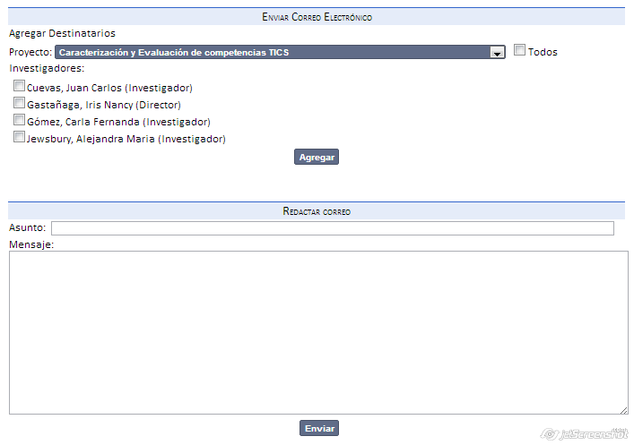
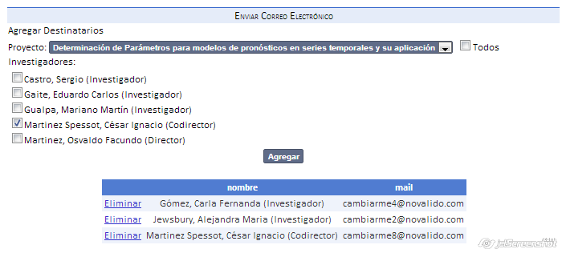

La lista de correo permite mandar multiples correos de acuerdo a diferentes opciones.
Si selecciona un proyecto, podrá elegir a cual de los aprticipantes enviarle, seleccionadolos y haciendo click en "Agregar".

Puede crear listas con múltiples participantes de distintos proyectos:

O bien haciendo click en "Todos" para agregar directamente todos los investigadores.
Se pueden eliminar en caso de no ser necesario.
Created with the Personal Edition of HelpNDoc: Produce Kindle eBooks easily